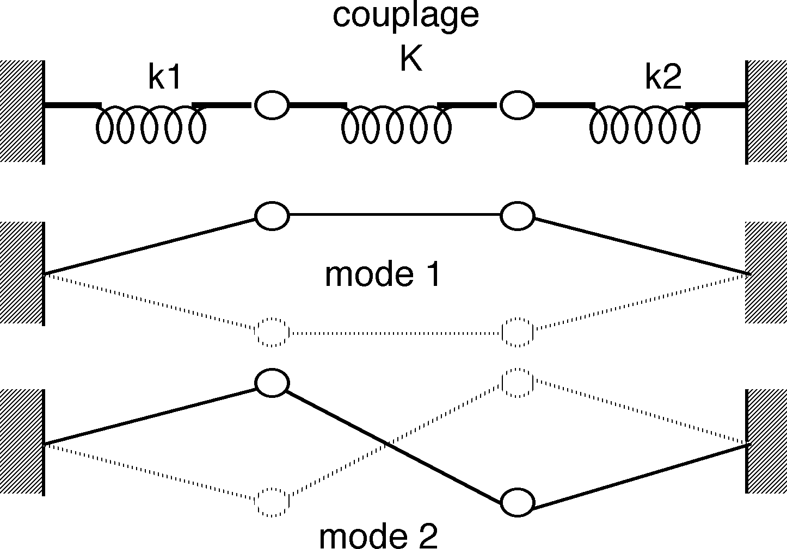
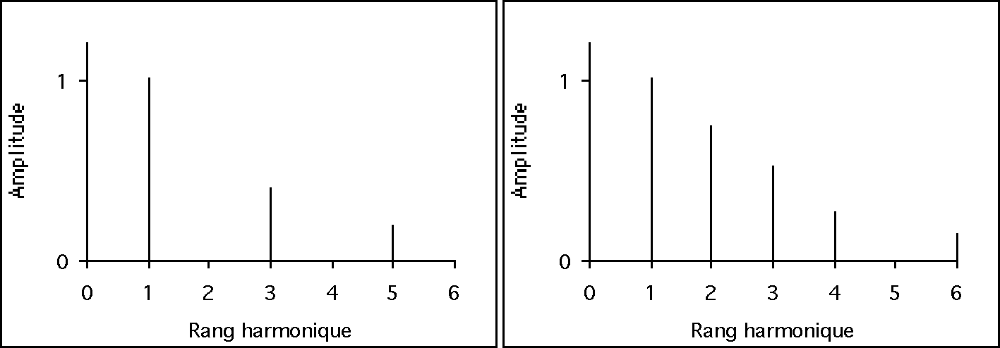
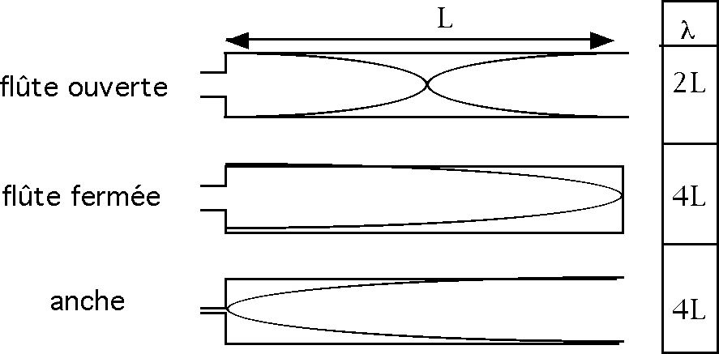
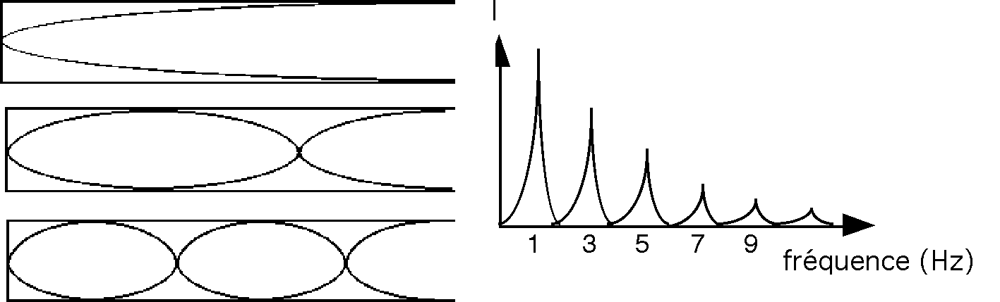

Acoustique instrumentale
Les instruments à cordes
Les vibrations d’une corde sont essentiellement transversales. Les différents modes de vibration d’une corde sont en relation harmonique :

La fondamentale :
avec :
- v la vitesse de propagation du son dans la corde,
- T la tension de la corde,
- M sa masse par unité de longueur
- L la longueur de la corde
Les harmoniques :
Le mouvement de la corde est une combinaison de ces divers modes de vibration. Les amplitudes relatives de chaque mode définissent le spectre de la vibration et dépendent du mode d’excitation de la corde et en particulier de la position de l’excitation sur la corde.
Si la corde est pincée en son centre, les harmoniques pairs sont inexistants. L’amplitude des harmoniques impairs est inversement proportionnelle au carré de leur rang harmonique. Si l’amplitude de la fondamentale est égale à 1, le troisième harmonique aura une amplitude de 1/9, le cinquième harmonique une amplitude de 1/25.
Si par contre la corde est pincée vers une extrémité, par exemple à 1/5 de sa longueur, les harmoniques de rang 5, 10… disparaissent mais toutes les autres harmoniques sont présents. Leurs amplitudes relatives décroissent moins vite.
Plus la corde est pincée près de l’extrémité, plus les harmoniques élevés sont intenses.

Les instruments à membranes et à plaques
Alors qu’une corde est un système à une dimension (ligne), les membranes et les plaques sont des systèmes vibrants à deux dimensions (surface). Au sens large, ce sont les peaux des tomes de percussions, les lames des percussions à claviers, les cloches ou même les éléments d’une caisse de résonance d’un violon.

Ces modes de vibrations peuvent être mis en évidence par une expérience assez simple.
Cette expérience est observable par exemple dans la salle "Sons et vibrations" du Palais de la découverte à Paris.
Elle montre que lorsqu'une plaque vibre à une de ses fréquences de résonance, certaines zones de la plaque restent immobiles, si bien que le sable s'y accumule.
Les instruments à tubes et à tuyaux
Les instruments à vent se distinguent par la forme de leur résonateur et la nature de l'anche utilisée.
Les résonateurs sont généralement coniques ou cylindriques. Les vibrations sont longitudinales.
On distingue deux sortes de tuyaux sonores : les tuyaux à anche qui sont toujours ouverts à l’autre extrémité et les tuyaux à embouchure de flûte qui peuvent être ouverts ou fermés à l'autre extrémité. Il se produit toujours un nœud à une extrémité fermée et un ventre à une extrémité ouverte. Dans ce dernier cas, la pression de l’air à l’extrémité ouverte est égale en permanence à la pression atmosphérique
Un tuyau ouvert aux deux extrémités a une fréquence de vibration propre F inversement proportionnelle à la longueur L du tuyau.
F = c/2L ou lambda = 2L
Un tuyau fermé à une extrémité donne un son d’une octave plus bas qu'un tuyau ouvert de même longueur.

L'impédance d'un tube cylindrique varie avec la fréquence et favorise les harmoniques impairs.

Pour un tube conique par contre, tous les harmoniques sont présents car la propagation du son est de type sphérique.
Dans le cas d’un cône évasé (cas du Cor), les partiels ne sont plus harmoniques (1f, 1,8f, 2,7f, 3,6f).